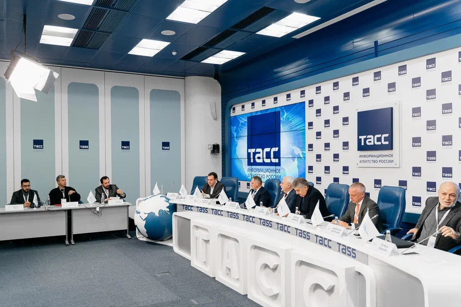

О Конференции
В Москве 17 ноября 2022 года завершила свою работу Всероссийская научно-практическая конференция «Россия: единство и многообразие», приуроченная к 10-летию деятельности Совета при Президенте Российской Федерации по межнациональным отношениям и реализации Стратегии государственной национальной политики Российской Федерации. Цель конференции — подведение итогов десятилетия реализации основополагающего документа стратегического планирования: Стратегии государственной национальной политики Российской Федерации на период до 2025 года.
16 ноября прошли заседания восьми тематических секций, на площадках которых ведущие ученые, эксперты и практики обсудили актуальные вопросы и перспективы развития межнациональных отношений, проанализировали ход реализации приоритетных направлений Стратегии государственной национальной политики Российской Федерации
17 ноября в Президент-отеле состоялось пленарное заседание конференции с участием руководства Администрации Президента Российской Федерации, Совета Федерации и Государственной Думы Федерального Собрания Российской Федерации, Министерства науки и высшего образования Российской Федерации, Министерства культуры Российской Федерации, Федерального агентства по делам национальностей, Федерального агентства по делам Содружества Независимых Государств, соотечественников, проживающих за рубежом, и по международному гуманитарному сотрудничеству (Россотрудничество), членов Совета при Президенте Российской Федерации по межнациональным отношениям, представителей межнациональных и национально-культурных общественных объединений, ведущих научных и экспертных организаций страны.
Как читать и использовать атлас?
Медиа атлас представляет собой цифровую брошюру по содержанию Всероссийской научно-практической конференции «Россия: единство и многообразие» . В него включена публичная информация о конференции с официального сайта, фотографии с мероприятия и цитаты экспертов. Кроме этого, атлас служит для удобства навигации пользователя и является точкой входа в чат-бот с материалами конференции, а также может служить для печати в тематических изданиях и СМИ.
Основные пользователи атласа:
- Представители местной и федеральной власти.
- Сотрудники научных и образовательных организаций.
- Представители общественности (члены Общественной палаты, представители общественных советов при исполнительных органах власти, руководители и представители СО НКО).
- Студенты, аспиранты, и молодые учёные вузов.
- Сотрудники научных и образовательных, организаций.
- Местные и федеральные журналисты.
Статистика
Количество посетителей сайта
3 289 чел.*
Количество офлайн посетителей
655
Просмотров трансляций секций
138 077
Количество организаторов (с сайта)
14 чел.
Количество докладчиков
195
Программа конференции:
Секция 1
Исторический опыт становления и развития многонационального Российского
государства
Секция 2
Стратегическое планирование, институциональные основы и правовое
регулирование государственной национальной политики
Российской Федерации
Секция 5
Сохранение этнокультурного и языкового многообразия России
Секция 6
Современные вызовы обеспечению межнационального согласия в российском
обществе: внешние и внутренние факторы,
инструменты преодоления
Секция 7
Русский мир как гарант обеспечения межнационального мира и согласия
Секция 8
Информационное сопровождение государственной национальной политики
Исторический опыт становления и развития многонационального Российского государства
В секции были представлены доклады, характеризующие основные этапы становления и развития России как многонационального и многоконфессионального государства, формирование этнического и религиозного состава населения, предпосылки и факторы многонационального согласия, традиции патриотизма, деятельность по противодействию фальсификации истории народов в ущерб интересам России.
Место проведения: Дом Российского исторического общества, Москва, ул. Воронцово Поле, д. 13, стр. 1
Организаторы: Институт российской истории РАН, Российское историческое общество, Минобрнауки России
Руководитель: Петров Юрий Александрович, директор Института российской истории РАН
По данным современной статистики, в Российской Федерации проживает около двухсот народов, которые в разные исторические периоды вошли в состав Российского государства. Ни один народ не исчез с исторической карты. Это коренным образом отличает Россию от большинства стран мира

Петров Юрий Александрович
Директор Института российской истории РАН «Полиэтничность как фактор исторического развития России»
Перед нами стоит важная задача переосмысления археологического наследия и того, как оно соотносится с проблемами современной российской истории, пространства и единства
Историческая правда — это объективные знания о прошлом, добытые научным путем. Наша задача - популяризировать достоверные факты и тем самым противодействовать фальсификации истории
Наследие Советского Союза в рамках исторического пространства — это, в первую очередь, границы нашего государства, границы между народами и этносами. Как историки и современники, мы ощущаем это геополитическое наследие в нашей повседневной жизни
У современного общества явно растёт интерес к религиозной жизни. За последние десять лет информационное поле церкви выросло многократно. Это касается не только русской православной церкви, но и других религий
Стратегическое планирование, институциональные основы и правовое регулирование государственной национальной политики Российской Федерации

В рамках секции были рассмотрены: ключевые положения Стратегии государственной национальной политики Российской Федерации до 2025 года и другие нормативно-правовые акты, регулирующие различные аспекты реализации государственной национальной политики Российской Федерации; актуальные проблемы государственной национальной политики и пути их правового решения; вопросы совершенствования стратегических документов в соответствии с современными трендами национальной политики.
Место проведения: МГУ имени М.В. Ломоносова, Москва, Ломоносовский пр-т, д. 27, корп. 4
Организаторы: ФАДН России, Институт законодательства и сравнительного правоведения при Правительстве Российской Федерации, МГУ имени М.В. Ломоносова, Минобрнауки России
Руководитель: Полунов Александр Юрьевич, заведующий кафедрой управления в сфере межэтнических и межконфессиональных отношений факультета государственного управления МГУ имени М.В. Ломоносова
Стратегия и институциональные основы — это необходимое условие эффективной реализации деятельности государства в любой сфере, в том числе в национальной политике
Основная сложность работы с законодательством в сфере государственной национальной политики — многие законы приняты более двух десятилетий назад и не подвергались корректировке. Большинство законов о коренных малочисленных народах нуждаются в актуализации

Котова Анна Викторовна
заместитель руководителя ФАДН России «Актуальные вопросы нормотворческой деятельности в сфере государственной национальной политики»
Недавно состоялся круглый стол в профильном комитете государственной думы, где было сказано о начале большой серьезной работы по совершенствованию законодательной базы в свете последних событий, новых рисков и угроз

Брод Александр Семенович
Член президиума Совета по межнациональным отношениям при Президенте Российской Федерации, член Совета при Президенте Российской Федерации по развитию гражданского общества и правам человека «Совершенствование государственной национальной политики в сфере профилактики и пресечения межнациональной (межэтнической) и межконфессиональной напряженности и конфликтов»
Все мы знаем, что приоритетом государственной национальной политики является соблюдение прав коренных малочисленных народов Российской Федерации

Евтюхова Елена Александровна
Заведующий кафедрой национальных и федеративных отношений, профессор кафедры национальных и федеративных отношений Российской академии народного хозяйства и государственной службы при Президенте Российской Федерации «Национальная политика современной России: предпосылки и факторы межнационального согласия»
Национальная политика в крупных городах России понимается прежде всего как взаимодействие с национально-культурными автономиями, а они, в свою очередь, считаются практически главными актами интеграции мигрантов

Ачкасов Валерий Алексеевич
доктор политических наук, профессор, заведующий кафедрой этнополитологии факультета политологии Санкт-Петербургского государственного университета «Роль институтов гражданского общества в реализации политики интеграции трудовых мигрантов в России»
Взаимодействие государства и общества: институты гражданского общества, национальные и молодёжные объединения в сфере реализации государственной национальной политики

На площадке секции были представлены доклады, отражающие важнейшие вехи взаимодействия государства и общества, а также роль межнациональных, национальных и молодежных общественных объединений в сфере реализации государственной национальной политики Российской Федерации. Проанализированы механизмы и практика взаимодействия органов публичной власти и институтов гражданского общества в укреплении общероссийского гражданского единства, обеспечении сохранения и развития культур и языков, духовно-нравственных ценностей народов России, гармонизации межнациональных и межрелигиозных отношений.
Место проведения: Общественная палата Российской Федерации, Москва, Миусская пл., д. 7, корп. 1
Организаторы: Общественная палата Российской Федерации, Ассамблея народов России, Минобрнауки России, Росмолодеж
Руководитель: Зорин Владимир Юрьевич, председатель комиссии по мониторингу и разрешению конфликтных ситуаций в сфере межнациональных отношений Совета при Президенте Российской Федерации, председатель комиссии Общественной палаты Российской Федерации по гармонизации межнациональных и межрелигиозных отношений
Стратегия государственной национальной политики, утверждённая В.В. Путиным в 2012 году, стала началом нового этапа в реализации современной модели национальной политики. Внесённые изменения имели фундаментальный характер
Десятилетний юбилей Совета по межнациональным отношениям совпал с самым большим вызовом за последние семьдесят восемь лет. До конца февраля органы власти работали в «лайтовом» режиме. С 24 числа нужно было включать мозги, импульсы, чутье, применить все свои знания, навыки и компетенции
Мы говорим о взаимодействии институтов гражданского общества с органами власти на протяжении всей новейшей истории Российской Федерации
Основная миссия комитета по делам молодежи — помочь молодым людям найти и реализовать свои мечты в России. Сегодня мы ставим перед собой задачу перейти от событийных мероприятий к созданию постоянно действующих молодежных площадок

Аширов Денис Валерьевич
Заместитель руководителя Росмолодежи «Формирование российской гражданской идентичности в молодежной среде»
Анализ хода реализации стратегии в контексте новых вызовов и угроз национальной безопасности показывает ряд актуальных проблем и задач, и среди них — вовлечение более широкого круга активных граждан, НКО и других институтов гражданского общества в конструктивное участие в решении задач государственной национальной политики

Купцова Ирина Валентиновна
Доктор исторических наук, профессор МГУ имени М.В. Ломоносова «Роль институтов гражданского общества в гармонизации межнациональных отношений: опыт и проблемы Громатикополо»
Механизмы утверждения российской идентичности и гражданского согласия многонационального народа Российской Федерации
В ходе работы секции были представлены доклады, отражающие формирование национальной идеи России и поиск национальной идентичности, обеспечение межэтнического согласия и гражданской солидарности, исследование форм идентичности в российском обществе, регионах и пограничных территориях, механизмы укрепления общероссийской идентичности, институциональные, исторические и культурные рамки формирования общероссийской идентичности на Северном Кавказе, ресурсы идентичности молодёжи коренных малочисленных народов Севера, ценности общероссийской и этнорегиональной идентичности в современном медиапространстве.
Место проведения: Президентский зал РАН, Москва, Ленинский пр-т, д. 32А, 2-й этаж
Организаторы: Институт этнологии и антропологии РАН, Институт социологии РАН, Минобрнауки России
Руководитель: ишков Валерий Александрович, академик РАН, заместитель председателя президиума Совета при Президенте Российской Федерации по межнациональным отношениям, научный руководитель Института этнологии и антропологии им. Н.Н. Миклухо-Маклая РАН
Горшков Михаил Константинович, академик РАН, научный руководитель Федерального научно-исследовательского социологического центра РАН (ФНИСЦ РАН), директор Института социологии ФНИСЦ РАН
Одним из ключевых ресурсов сплочённости современного российского общества является, безусловно, гражданская идентичность, которая вносит важный вклад в поддержание уверенности людей в поступательном развитии страны
Процесс формирования единой нации является динамичным, непрерывным и двусторонним. Государство в лице политической и интеллектуальной элиты формулирует национальную идею, выстраивает государственную национальную политику. В свою очередь, граждане соотносят себя с нацией, ведут свою деятельность сообразно представлениям о личных и групповых интересах
Мы" и «они», «свои» и «чужие». Кто проводит и выстраивает эти границы? Подавляющая часть этих границ проводится в наших головах, а не чем-то, что реально существует
Формирование гражданской идентичности и укрепление гражданского самосознания является приоритетом стратегии государственной национальной политики. Определённые результаты достигнуты по всей стране
Распространяя определённую информацию в общественном пространстве России, СМИ способствуют формированию массовых взглядов и представлений людей, в том числе связанных с их гражданскими чувствами, с общероссийской идентичностью
Сохранение этнокультурного и языкового многообразия России

В рамках секции рассмотрены две важнейшие темы, являющиеся основой для укрепления государственного единства и целостности Российской Федерации и сохранения этнокультурной самобытности её народов. Участниками секции дана оценка текущей реализации государственной национальной политики по вопросу укрепления гражданского единства через сохранение и развитие культур и языков народов России. В рамках подсекции «Культура народов России» рассмотрели вопросы государственной политики в области сохранения этнокультурного многообразия России, существующие методы сохранения этнокультурного наследия и их эффективность, роль этнокультурного туризма как способа гармонизации межнациональных отношений. Отдельный блок посвящён вопросам налаживания межнациональных отношений на освобождённых территориях. В рамках подсекции «Языки народов России» обсуждена государственная политика сохранения и поддержки народов России, отдельно рассмотрены вопросы создания общеязыкового пространства со странами СНГ и поддержки русского языка как языка межнационального общения.
Место проведения: Парламентская библиотека, Москва, пр-т Вернадского, д. 93, корп. 4 Подсекция 1. Культура народов России
Организаторы: Комитет Государственной Думы по делам национальностей, Минкультуры России, Минобрнауки России Подсекция 2. Языки народов России
Руководитель: Семигин Геннадий Юрьевич, председатель Комитета Государственной Думы по делам национальностей, сопредседатель Партии «Справедливая Россия — Патриоты — За правду»
Одна из ключевых задач — объединение всего нашего многонационального российского народа и решение целого ряда важных вопросов, которые определяют сами граждане: какая стратегическая цель, куда идёт страна
Россия является залогом языкового и культурного многообразия на территории бывшего Советского Союза, Евразии и всей планеты, и в том числе Украины
Прилепин Захар
Сопредседатель Партии «Справедливая Россия — Патриоты — За правду», писатель, публицист «Многонациональность и этнокультурное наследие как ресурс государственной культурной политики России»
Инструментов влияния на ситуацию у нас не так много. На самом деле, руководить можно тремя рычагами, как в танке — законы, деньги и кадры. Например, у министерства культуры нет рычагов воздействия на контент, который они финансируют

Драпеко Елена Григорьевна
Первый заместитель председателя Комитета Государственной Думы по культуре «Культурная политика в многонациональном государстве»
Каждый язык — уникальное культурное явление, родной язык для человека, для индивида — сверхценность. Сила России сейчас более, чем когда-либо, именно в этническом языковом единстве, и это единство является одной из мишеней, которые подвергаются воздействию

Кибрик Андрей Александрович
Директор Института языкознания РАН «Языковое разнообразие России: состояние и перспективы сохранения»
Русский язык занимает пятое место в мире по распространению, третье — в сети Интернет, обеспечивая коммуникацию на электронных ресурсах. На постсоветском пространстве русский язык по-прежнему на первом месте
Современные вызовы обеспечению межнационального согласия в российском обществе: внешние и внутренние факторы, инструменты преодоления

Секция посвящена обсуждению важнейших вопросов сохранения межнационального мира и согласия, обеспечения общественной безопасности, стабильного и поступательного развития общества. В докладах, представленных на секции, рассмотрены основные вызовы и угрозы в сфере межнациональных отношений на современном этапе, связанные с деструктивным внешним влиянием, актуализацией негативной исторической памяти, попытками расколоть российское общество по межнациональному и межконфессиональному признакам, использовать проблему беженцев для усиления социальной напряженности и придания ей межнациональной окраски. В условиях проведения специальной военной операции на Украине все эти вопросы приобретают дополнительную актуальность и требуют особого внимания специалистов. Программные доклады, реплики и обсуждения по теме: «Современные вызовы обеспечению межнационального согласия в российском обществе: внешние и внутренние факторы, инструменты преодоления».
Место проведения: Российский университет дружбы народов (зал ученого совета), Москва, ул. Миклухо-Маклая, д. 6
Организаторы: ФАДН России, МВД России, Научный совет РАН по комплексным проблемам этничности и межнациональных отношений, Российский государственный гуманитарный университет, Минобрнауки России
Руководитель: Бедкин Станислав Анатольевич, заместитель руководителя Федерального агентства по делам национальностей
Целью любого политико-административного управления миграцией должна быть некая совокупность в области социального, демографического, экономического, регионального развития в контексте обеспечения национальной безопасности и национальных интересов
Мы реализуем программу миграционной политики, которая ставит перед нами задачи до 2025 года. Основные генеральные линии у нас намечены, и мы, безусловно, им следуем

Казакова Валентина Львовна
Начальник Главного управления по вопросам миграции МВД России (член Совета при Президенте Российской Федерации по межнациональным отношениям) «Особенности формирования и реализации государственной миграционной политики Российской Федерации в 2022 году»
Миграционная политика неизбежно несёт в себе ряд рисков для принимающего сообщества, как социальных, так и культурных, а также в сфере безопасности. Наша страна, в отличие от других стран, не является приоритетным миграционным направлением для высококвалифицированных специалистов

Соснина Марина Владимировна
Начальник отдела государственной политики в сфере социокультурной адаптации и интеграции иностранных граждан Управления анализа, прогноза и работы с иностранными гражданами ФАДН России «Реализация государственной политики в сфере социальной и культурной адаптации и интеграции иностранных граждан в Российской Федерации»
Уровень адаптации иностранных студентов на уровне микропараметра: если начал понимать российские шутки — значит, адаптация проходит успешно!
Уровень адаптации иностранных студентов на уровне микропараметра: если начал понимать российские шутки — значит, адаптация проходит успешно!
Русский мир как гарант обеспечения межнационального мира и согласия
На площадке секции были рассмотрены проблемы и перспективы развития концепции «Русский мир» в новой геополитической реальности. В рамках секции затронуты проблемы категориально понятийного аппарата концепции, миссии «Русский мир», а также инструментов его укрепления, таких как «мягкая сила» и «публичная дипломатия». Кроме того, поднимались актуальные вопросы новых вызовов и угроз концепции «Русский мир» в условиях санкционного давления и нарастающей русофобии. Работа проведена в рамках трёх сессий: сессия 1 — «Что такое Русский мир? Миссия Русского мира» (модератор Е.А. Примаков); сессия 2 — «Формат Русского мира для сохранения уникальности народов» (модератор Д.В. Поликанов); сессия 3 — «Русский мир как шанс на развитие» (модератор Е.А. Примаков). Были программные доклады, реплики и обсуждения по теме «Современные вызовы обеспечению межнационального согласия в российском обществе: внешние и внутренние факторы, инструменты преодоления».
Место проведения: МГИМО МИД РФ, Москва, пр-т Вернадского, д. 76
Организаторы: Россотрудничество, фонд «Русский мир», Минобрнауки России
Руководитель: Примаков Евгений Александрович, руководитель Федерального агентства по делам Содружества Независимых Государств, соотечественников, проживающих за рубежом, и по международному гуманитарному сотрудничеству (Россотрудничество)
Русский мир — это ценности, традиции, сочетающиеся с прогрессом и развитием безопасности, суверенитета и справедливости. Русский народ — ядро этого понятийного ряда

Примаков Евгений Александрович
Руководитель Федерального агентства по делам Содружества Независимых Государств, соотечественников, проживающих за рубежом, и по международному гуманитарному сотрудничеству (Россотрудничество)
Проблемы русского мира имеют многовековую историю, они связаны и с развитием нашей государственности, и нашего общества. Русский мир — исключительно важное, ответственное и имеющее грандиозное целеполагание дело

Торкунов Анатолий Васильевич
Ректор МГИМО МИД России, академик Российской академии наук, Чрезвычайный и Полномочный Посол, член Коллегии МИД России «Русский мир» и актуальные направления национальной политики России«
Люди моего поколения не думали, что мы попадём в такую политическую и человеческую турбулентность. Нельзя быть равнодушными. Не получится отсидеться. Наша страна хоть и большая, но очень ранимая. Давайте будем вместе

Степашин Сергей Вадимович
Председатель Императорского православного палестинского общества, председатель Ассоциации юристов России «Общественно-политический вектор российской дипломатии: 140 лет деятельности ИППО на Ближнем Востоке»
Мир меняется кардинальным образом. Мы вступаем в ту радикальную смену, которая, как мы думали, произошла тридцать лет назад. Как теперь понятно, настоящий перелом наступает только сейчас

Лукьянов Федор Александрович
Главный редактор журнала «Россия в глобальной политике», член президиума некоммерческой организации «Российский совет по международным делам», директор по научной работе Фонда развития и поддержки Международного дискуссионного клуба «Валдай», автор и ведущий программы «Международное обозрение» «Роль национальной идентичности в мире после глобализации»
Сегодня мы вышли на оптимальную модель сосуществования разных этносов внутри единой государственности во многом благодаря Стратегии, её практической реализации на всех уровнях, от законодательного до муниципального. Я уверен, что в этом смысле именно наша российская модель имеет потенциал быть образцом для многих других многонациональных государств

Косачев Константин Иосифович
Заместитель председателя Совета Федерации
Информационное сопровождение государственной национальной политики

Ссылка на вход в чат-бот
Участники обсудили основные направления реализации государственной национальной политики Российской Федерации в сфере информационного обеспечения, состояние и степень влияния СМИ на процессы, формирующие современное гражданское общество в многонациональной России, с учётом происходящих мировых и региональных процессов, информационно-психологических нападок на Россию. Цель дискуссии — развитие и укрепление межнационального и международного согласия, а также расширение информационной среды, выполняющей задачи укрепления гражданского единства, обеспечение сохранения и развития культуры и языков, духовно-нравственных ценностей народов России. В дискуссии приняли участие представители профильных государственных структур, представители средств массовой информации, освещающих вопросы реализации государственной национальной политики Российской
Федерации (ВГТРК, Межгосударственная телерадиокомпания «Мир», Международное информационное агентство «Россия сегодня», Общественное телевидение России, Международное информационное телеграфное агентство России (ИТАР-ТАСС), научное и экспертное сообщество, общероссийские национально-культурные общественные объединения, члены Комиссии по информационному сопровождению государственной национальной политики Совета при Президенте Российской Федерации по межнациональным отношениям.
Место проведения: Пресс-центр ТАСС, Москва, Тверской б-р, д. 2, 2-й этаж
Организаторы: Комиссия по вопросам информационного сопровождения государственной национальной политики Совета при Президенте Российской Федерации по межнациональным отношениям, Минобрнауки России
Руководитель: Абрамян Ара Аршавирович, председатель Комиссии по вопросам информационного сопровождения государственной национальной политики Совета при Президенте Российской Федерации по межнациональным отношениям, президент Общероссийской общественной организации «Союз армян России»
С учётом современных мировых и региональных процессов, информационно-психологических атак на Россию со стороны западных структур и акций по антигосударственной и сепаратистской пропаганде против нашей страны, вопросы обеспечения внутриполитической стабильности в России, укрепления межнационального мира и согласия выходят на первый план и становятся важнейшими факторами общенациональной консолидации вокруг политического курса руководства страны

Абрамян Ара Аршавирович
председатель Комиссии по вопросам информационного сопровождения государственной национальной политики Совета при Президенте Российской Федерации по межнациональным отношениям, президент Общероссийской общественной организации «Союз армян России»
Необходима совместная работа с блогерами, ведь новому поколению важно, из чьих уст доносится информация, а современная информационная политика должна ориентироваться именно на молодёжь и передачу заранее проверенной информации.

Джума Аббас
Журналист-международник, специальный корреспондент РИА ФАН
Сегодня как никогда важно организовать грамотное информационное сопровождение событий и в условиях информационной агрессии четко обозначить в медиапространстве главенство и приоритеты национальной политики Российской Федерации

Лидия Лободенко
Директор ИМСГН, доктор филологических наук, профессор
Пленарное заседание
Подведение итогов научно-практической конференции, приуроченной к 10-летию образования Совета при Президенте Российской Федерации по межнациональным отношениям и реализации Стратегии государственной национальной политики на период до 2025 года.
Место проведения: Президент-отель, Москва, ул. Большая Якиманка, д. 24 1
Модератор: Лукьянов Федор Александрович, главный редактор журнала «Россия в глобальной политике», член президиума некоммерческой организации «Российский совет по международным делам», директор по научной работе Фонда развития и поддержки Международного дискуссионного клуба «Валдай», автор и ведущий программы «Международное обозрение»
Организаторы: Институт российской истории РАН, Российское историческое общество, Минобрнауки России
Руководитель: Примаков Евгений Александрович, руководитель Федерального агентства по делам Содружества Независимых Государств, соотечественников, проживающих за рубежом, и по международному гуманитарному сотрудничеству (Россотрудничество)
Решения Президента России Владимира Путина, принятые в 2012 году, стали основой для последующих преобразований, которые послужили началом фундаментальных изменений в реализации современной национальной политики. В Стратегии, которая рождалась в результате широкого обсуждения и дискуссий, отражена формула межнационального согласия современной России, которая одновременно выступает ориентиром практической деятельности как институтов государства, так и институтов гражданского общества. Эта формула звучит так: укрепление единства российской нации на основе сохранения и развития этнокультурной самобытности народов России
Сегодня мы вышли на оптимальную модель сосуществования разных этносов внутри единой государственности во многом благодаря Стратегии, её практической реализации на всех уровнях, от законодательного до муниципального. Я уверен, что в этом смысле именно наша российская модель имеет потенциал быть образцом для многих других многонациональных государств. Хочу отметить, что темы, которые мы обсуждаем сегодня, традиционно входят в фокус внимания и регулируются Советом по межнациональным отношениям и взаимодействию с религиозными объединениями при Совете Федерации. По итогам нашей работы подготовлен целый ряд конкретных рекомендаций в адрес как законодательной, так и исполнительной власти, в том числе и по возможной корректировке самой Стратегии так и планам мероприятий по её реализации
Косачев Константин Иосифович
Заместитель Председателя Совета Федерации Федерального Собрания Российской Федерации
Недавнее обновление Конституции коснулось и ценностных доминант общества и государства, к одной из которых относится национальное единство нашей страны. Закреплены гарантии сохранения родных языков, создание условий для их изучения и развития, защиты культурной самобытности всех народов и этнических общностей. Наша Комиссия во взаимодействии с Комитетом Государственной Думы по делам национальностей вела работу по закреплению положений конституционных норм в законодательстве. Большой блок принятых законопроектов касался гарантии прав коренных малочисленных народов Севера, Сибири и Дальнего Востока. Были введены нормы, призванные совершенствовать порядок создания и деятельности общин коренных малочисленных народов и ряда других норм
По части, которая касается высшего образования, я хочу особенно отметить, что требуется усилить реализацию программ, направленных на изучение культуры и традиций народов России, повысить качество их исполнения. Повышение уровня знаний по истории и межнациональным отношениям является лучшей профилактикой нетерпимости и экстремизма, гармонизации межнациональных отношений, достижения гражданского мира и согласия
Организаторы Конференции


При поддержке


Контакты
По всем организационным вопросам обращаться к Нестеровой Ольге Викторовне
Референту Департамента информационной политики и комплексной безопасности Министерства науки и высшего образования Российской Федерации